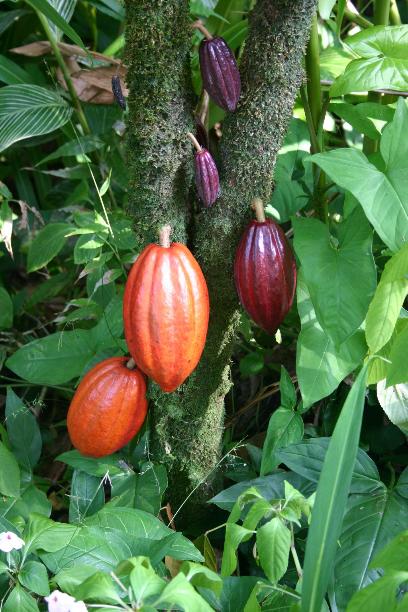
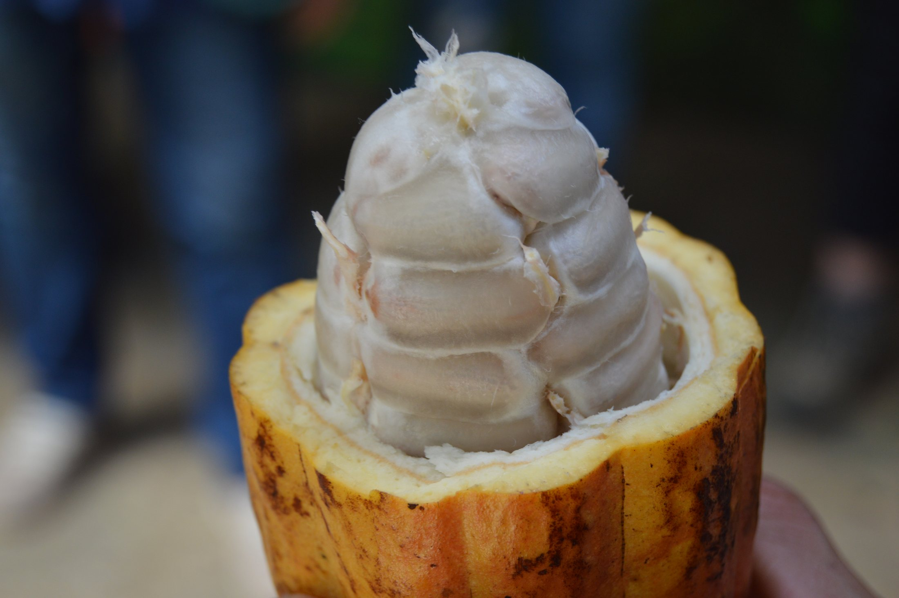
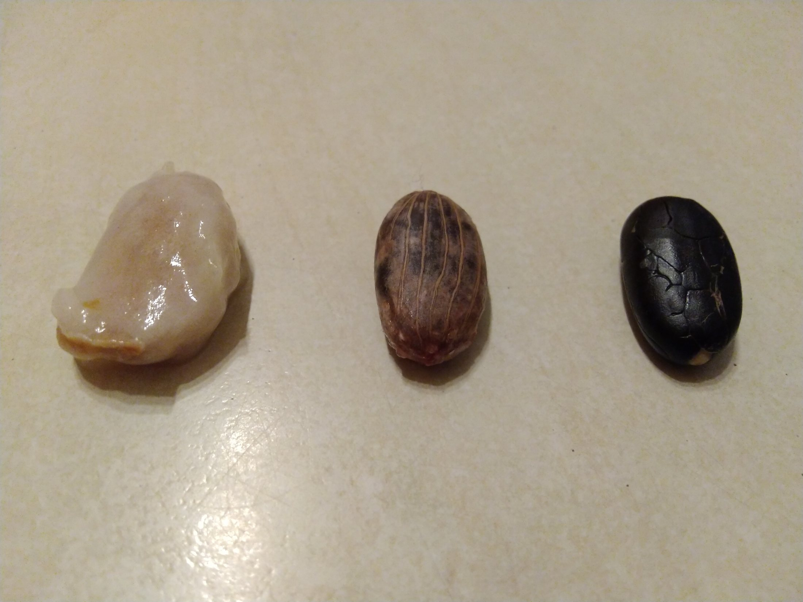
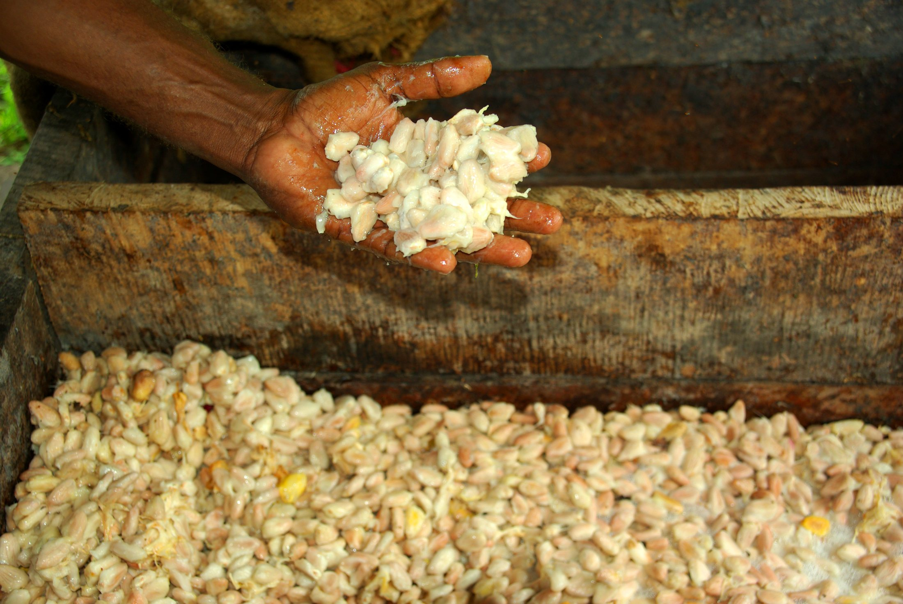
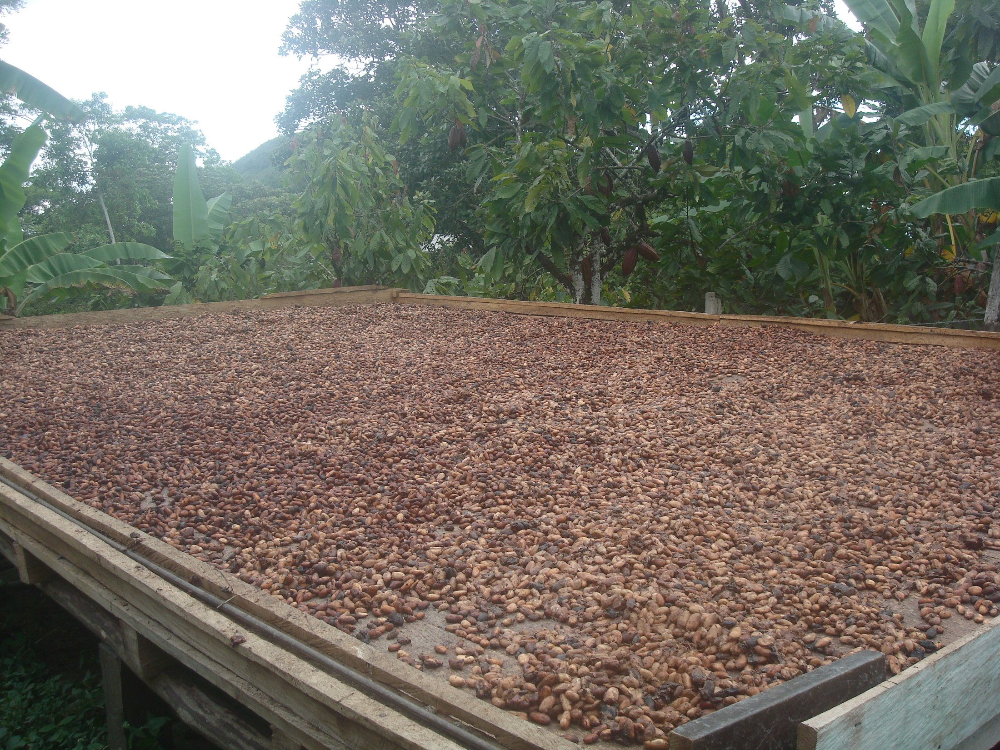
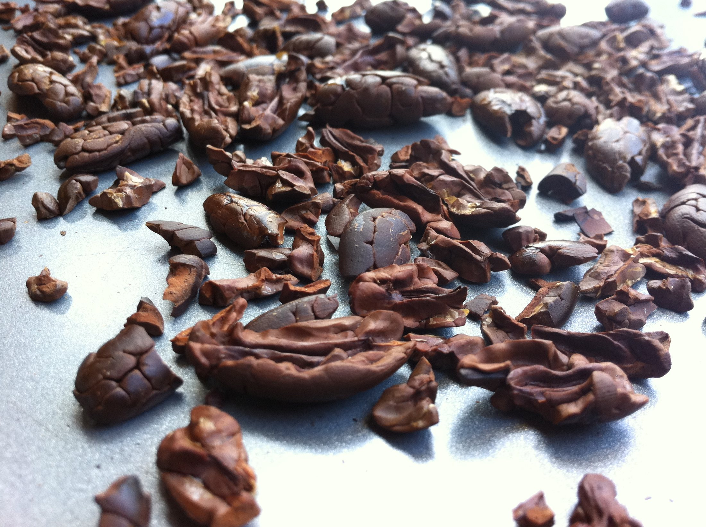
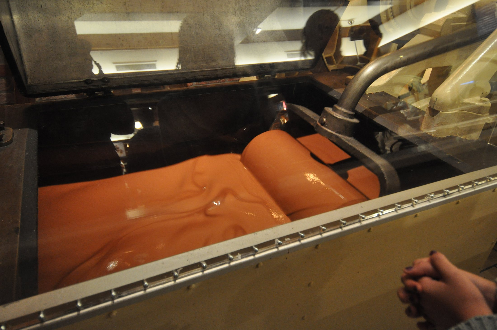
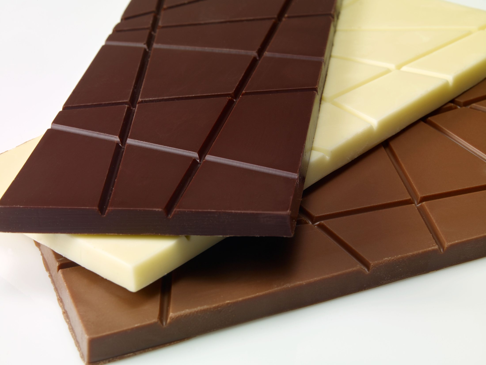

Chocolate
From Bean to Bar

From Bean to Bar
Chocolate starts in a surprising place: on a cacao tree. The tree grows in warm, rainy places near the equator.
Cacao pods can look like bumpy footballs. Inside each pod are many seeds tucked into soft, pale pulp.

Fresh cocoa beans do not taste like a candy bar. They are bitter, and they need a long journey before they become chocolate.


After harvest, farmers let the beans and pulp ferment. Tiny living helpers begin changing the beans and building chocolate flavor.

Next, the beans dry in the sun or in warm air. Dry beans can travel safely to people who make chocolate.

Chocolate makers roast the beans. Then the shells come off, leaving crunchy little pieces called nibs.
The nibs are ground into a thick paste. Machines mix and smooth the chocolate until it feels silky on your tongue.

Cooling chocolate is a science trick. When it cools just right, it turns shiny, snaps neatly, and melts smoothly. Dark, milk, and white chocolate are made in different ways, but each one begins with cacao.
